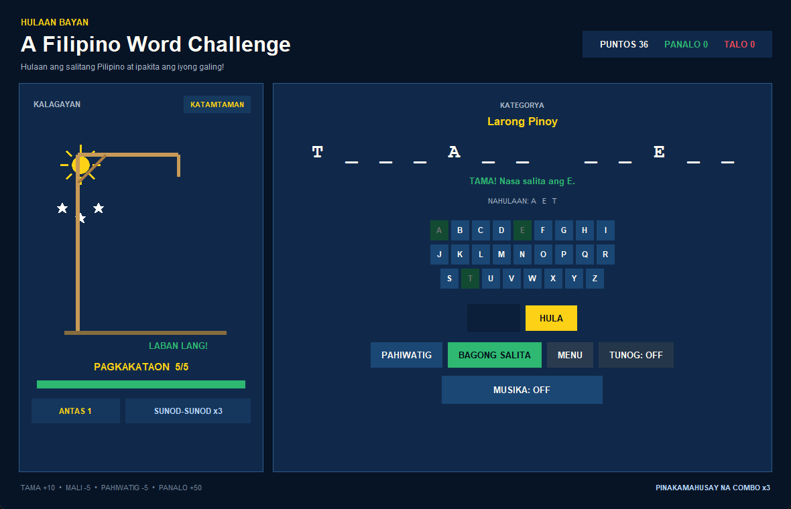
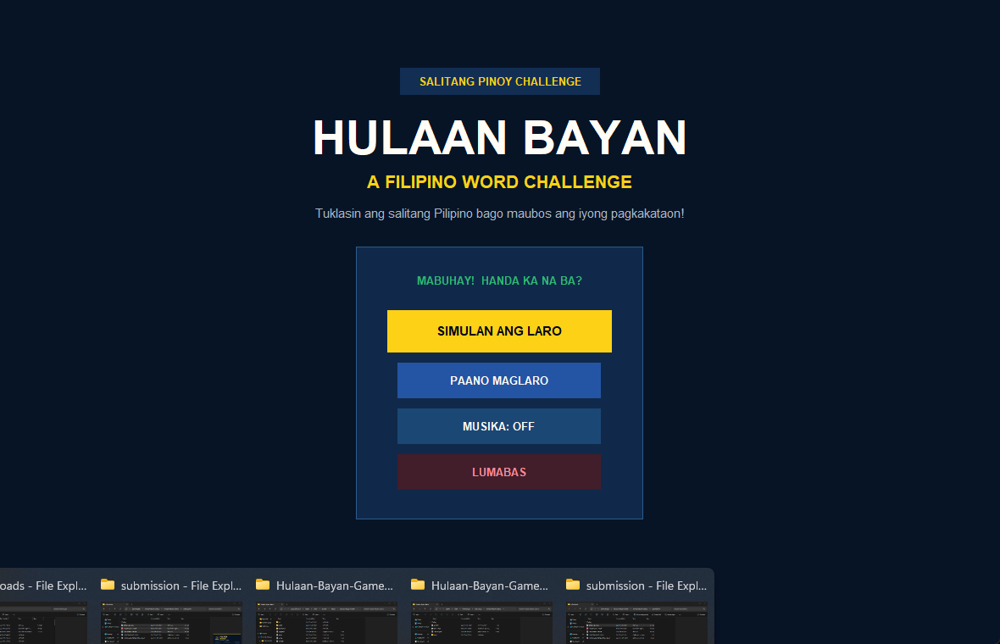

Free desktop download · Python 3 + Tkinter · No extra game packages
6 categoriesA celebration of Filipino life
3 difficultiesChoose your challenge
One letterThat's all it takes to begin
The game
Familiar rules. A Filipino identity.
Game description
Hulaan Bayan is a Filipino-themed word-guessing game based on Hangman. Choose a category and difficulty, then guess one letter at a time to uncover the hidden word before your chances run out. Earn points for correct guesses, build a combo, and use a hint when you need help. With words about Filipino food, traditional games, festivals, places, culture, and heroes, each round is a chance to explore the Philippines.
Game concept
Hulaan Bayan builds on the GROUP 5 Advanced Hangman project while keeping its familiar letter-guessing mechanics. The transformation adds Filipino vocabulary, local interface messages, Philippine-inspired colors, and a bamboo-style scaffold. The theme connects a familiar game with everyday Filipino culture and heritage. Category selection, three difficulty levels, hints, and combo scoring give this version its own identity.
Rooted in the Philippines
From adobo to bayanihan.
Six categories celebrate Filipino cuisine, traditional games, festivals, destinations, cultural practices, and heroes. Blue, red, gold, a sun motif, and bamboo-inspired game artwork connect the visual identity to the Philippines.
Pagkaing PinoyLarong PinoyPistang PilipinoLugar sa PilipinasKulturang PilipinoMga Bayani
Inside Hulaan Bayan
Your next word is waiting.

Actual desktop gameplay · Guess letters, track your chances, and build a combo.See the main menu

Paano maglaro
Pick. Guess. Discover.
Choose your challenge
Pick a category and choose Madali (6 chances), Katamtaman (5), or Mahirap (4).
Reveal the word
Click a letter or type one and press Enter. A wrong letter uses a chance. Need help? A hint costs 5 points.
Keep the streak going
Correct letters earn 10 points plus combo bonuses. Solve the word for 50 more, then move to the next round.
Handa ka na ba?
Bring the challenge home.
Download the ZIP, extract the whole folder, and open Start-Game.cmd on Windows. You can also launch the source from a terminal.